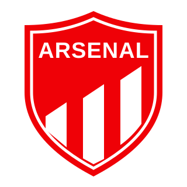
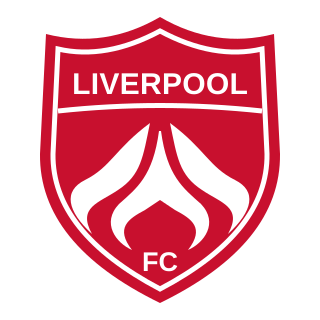
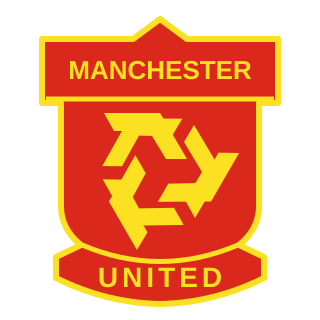

<!doctype html><html lang="en"><meta charset="utf-8"><meta name="viewport" content="width=device-width,initial-scale=1"><title>Vector crest examples</title><style>*{box-sizing:border-box}body{margin:0;padding:38px;background:#101722;color:#edf3fb;font:16px Arial,sans-serif}h1{font-size:32px;margin:0 0 10px}header p{color:#9eafc6;margin:0 0 30px}.grid{display:grid;grid-template-columns:repeat(5,1fr);gap:16px}article{background:#1b2636;border:1px solid #36455b;border-radius:18px;padding:18px;text-align:center}.crest{width:100%;height:245px;object-fit:contain}h2{font-size:17px;margin:18px 0 14px}.small{display:flex;justify-content:center;align-items:center;gap:16px;min-height:66px}.small svg{width:36px;height:36px}.small svg+svg{width:64px;height:64px}footer{color:#a9bad0;margin-top:24px;font-size:14px}@media(max-width:800px){.grid{grid-template-columns:repeat(2,1fr)}}article>svg{width:100%;height:245px}.small{pointer-events:none}</style><header><h1>Vector crest examples</h1><p>Same five teams · exact team colors · editable SVG artwork</p></header><main class="grid"><article><h2>Arsenal</h2><div class="small"></div></article><article><h2>Chelsea</h2><div class="small"></div></article><article><h2>Liverpool</h2><div class="small"></div></article><article><h2>Manchester City</h2><div class="small"></div></article><article><h2>Manchester United</h2><div class="small"></div></article></main><footer>Vector versions of the approved design direction. These are comparison samples, not replacements in the game.</footer></html>